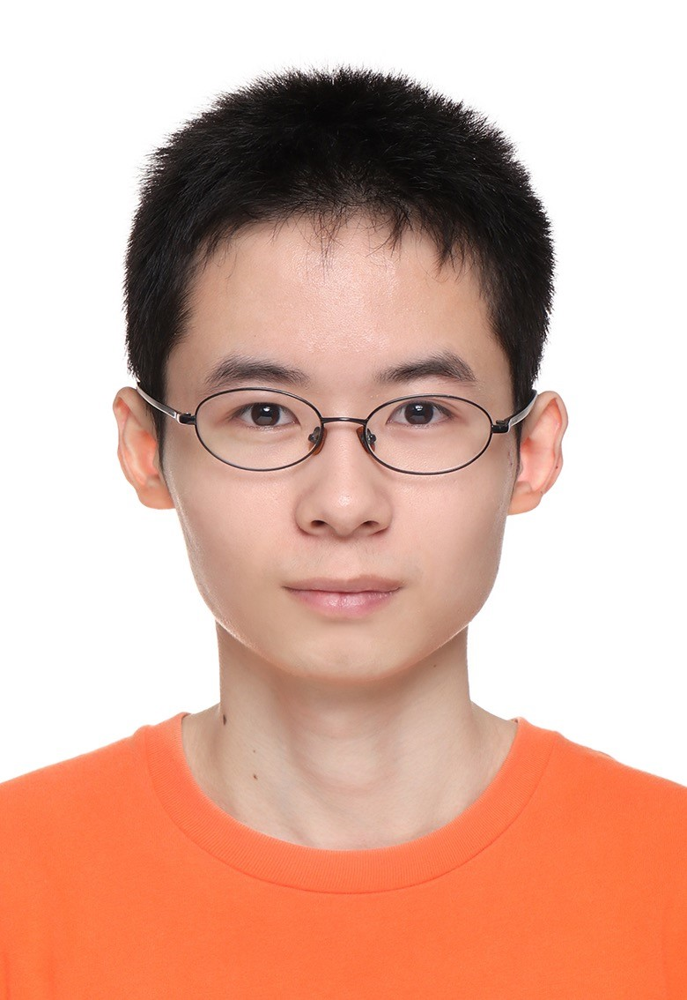

张添顺 (ZHANG Tianshun)
|  | 硕士研究生 |
关于我
我目前正在申请海外博士项目。 本人已于2022年6月从苏州大学 光电科学与工程学院 光学工程专业 获得工学硕士学位。 在此之前, 我于2019年6月在 苏州大学 光电科学与工程学院 光电信息科学与工程专业获得了理学学士学位。
我的研究兴趣主要包括: 计算全息, 三维显示, 信息论, 三维像质评价, 图像处理, 计算成像，AR/VR/MR 等。
教育经历
|
|
硕士 苏州大学 (2019.9 ~ 2022.6) |
|
|
本科 苏州大学 (2015.9 ~ 2019.6) |
学术成果
Assessment of 3D reconstructed image quality for computer-generated holographic 3D display
Tianshun Zhang，Yun Chen, Minjie Hua, Mingxin Zhou, Wenlong Zou, Jianhong Wu
SPIE Proceeding 12169B5 (Proc. SPIE), Mar. 2022. [PDF]
Enhancement of radiative cooling effect by bioinspired hollow-core triangular structures
Ke Li#, Tianshun Zhang#, Lei Pan, Xinyuan Zhang, Xiudong Xu, Shuliang Dou, Yao Li and Yaohui Zhan
Journal of Physics: Conference Series 2185 012007(J. Phys.: Conf. Ser. ), Nov. 2021. [PDF]
Convolutional Neural Network for Phase-Only Hologram Optimization Based on the Point Source Method With the Holographic Viewing-Window
Yun Chen, Tianshun Zhang, Minjie Hua, Mingxin Zhou, Jianhong Wu
IEEE Photonics Journal (IEEE PHOTONICS J), Aug. 2022. [PDF]
Holographic near-eye display based on complex amplitude modulation with band-limited zone plates
Yun Chen, Minjie Hua, Tianshun Zhang, Mingxin Zhou, Jianhong Wu and Wenlong Zou
Opt. Express 29, 22749-22760 (OE), Jul. 2021. [PDF]
A speckle noise suppression method in phase-only holographic display based on an improved Gerchberg–Saxton algorithm
Minjie Hua, Yun Chen, Tianshun Zhang, Mingxin Zhou, Wenlong Zou, Jianhong Wu
Optik (OPTIK), Nov. 2021. [PDF]
校园经历
2019.9~2022.6 , 苏州大学光电科学与工程学院 , 大学物理实验课 助教
迈克尔逊干涉仪测量钠黄双线平均波长实验
牛顿环测平凸透镜的曲率半径实验
科研经历
2019.9~2022.6 , 苏州大学光电科学与工程学院 , 加入吴建宏教授课题组
论文题目：三维计算全息信息量及其评价方法研究2016.9~2019.6 , 苏州大学光电科学与工程学院 , 参加导师培养制，加入詹耀辉副教授课题组
期间导师制科研方向为：被动降温薄膜的设计与仿真
标准化考试
IELTS: 6.5
Listening: 6 Reading: 7.5 Writing: 6 Speaking: 6
专业技能
MATLAB, Mathematica, 全国和江苏省计算机二级(C语言), COMSOL有限元仿真, MAYA三维建模, AutoCAD, Adobe...
自我评价与爱好
热爱学习、为人友善、积极向上、不怕困难、自我驱动
喜爱游泳、骑行、羽毛球、乒乓球运动